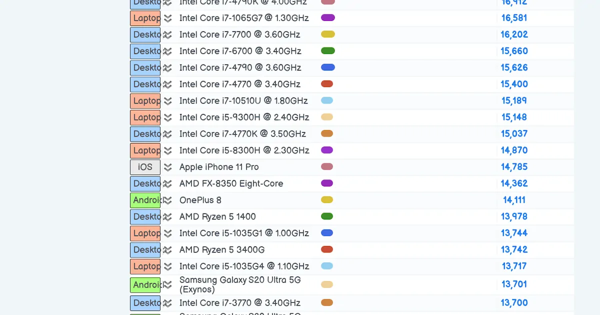
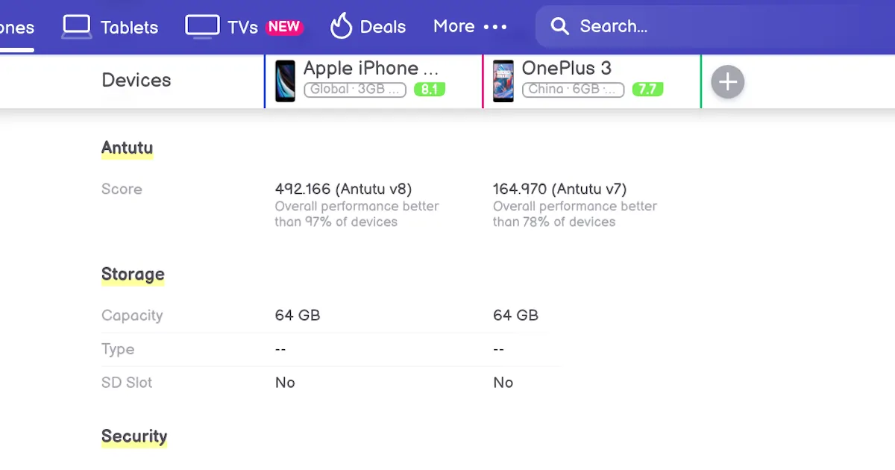

中古スマホのおすすめは画面に傷とヤケがあるストックAndroid

中古でスマートフォンを購入する場合は画面の傷やヤケを気にしてはならない。確かに、白背景に固定しているのであれば、傷やヤケが気になることもある。しかし、どのようなアプリでも画面の傷が目立つような白さであり続けることなど稀だ。さらに、近頃はダークモードが流行っている。
また、多少の使用感を許容できないのにもかかわらず、中古スマホを検討するのは矛盾している。目立つ傷があると買い手も少なくなるのだから価格も下がる。したがって、中古で購入すると決意したならば、積極的に傷やヤケがある安価な端末を狙うべきだ。

アイキャッチの画像はじゃんぱらで購入したOnePlus 3だ。じゃんぱらによる状態の説明の通りステータスバーにヤケがあることは確認できた。ただし、通常の使用で気にしたことは一度もない。OSはOxygenOSだ。ストックAndroidではないが価格が1万円以下ということから妥協した。ブロートウェアはHuaweiと比較すると極端に少ない。発売日が2016年と古く、Android 10へのアップグレードを行うことはできない。
ストックAndroidでOnePlus 3と同じく有機ELディスプレイを採用しているUMIDIGI Xの中古も検討した。しかし、指紋認証時にブラックアウトが発生するなどの不具合報告の多さにあきらめざるを得なかった。有機ELはダークモードを好む者にとっては必須だ。バックライトが点灯している液晶とは別次元の黒さだ。

スマホの寿命を延ばす 知って納得、バッテリーの謎｜MONO TRENDY｜NIKKEI STYLE
スマホをメルカリやラクマなどの個人から購入するのはリスクが高い。不要品を処分するのであるから隅々まで清掃するようなことはない。また、液晶面やバッテリーの状態を調べることも怠るだろう。たとえば、カナル型イヤホンを中古で購入して大量の耳垢が詰まっていたという話もある。このような事例は枚挙に暇がない。素人は点検のためのチェックリストを作らない。品質管理にマニュアルがないのだから購入者は粗悪品を送りつけられる確率が高い。特に、バッテリーの劣化は交換する以外になく必ず後悔することになる。それゆえに、じゃんぱらなどのリユースショップで買うほうが個人よりも品質の面で安全である。
 PassMark CPU Benchmarks - Cross-Platform CPUs Performance
この表はクロスプラットホームでCPU性能を比較したものだ。最新のスマホは低スペックPCと同等だ。CPU性能でiPhone11 ProのApple A13 はIntel Core i5にベンチマークで劣る。中古のi5は数年前から1万円程度で売られている。したがって、スマホに搭載されているCPUを誇るのは夜郎自大だ。PCと比較するとごみ同然であるから日常で使用しているアプリがストレスなく動けばよいと考えるべきだ。
 Apple iPhone SE 2020 vs OnePlus 3: Comparison
iPhone SE 2020とはAntutuのベンチマークで3倍以上の差がある。しかし、スマホの性能は五十歩百歩、大同小異 、どんぐりの背比べであることを理解しているのであれば、この差に動じることはない。AnTuTuにおいて15万点もあるならばストレスなくアプリは動作する。ベンチマークの差を際立たせるために、PUBGやTemple Run 2、の読み込みと動作を比較する動画が多い。これはつまらない競争だ。3Dグラフィックス性能を要求されるFPS系は最新のグラボを搭載したゲーミングPCで遊ぶべきだ。スマホに30cmを超える高い性能のグラボを搭載することは物理的に不可能である。また、6インチの画面では、どのように頑張っても3Dゲームで没入感のある体験など得られない。
 Google Pixel 4 XL Vs iPhone SE 2020 Speed Test - YouTube
Google Pixel 4 XL Vs iPhone SE 2020 Speed Test - YouTube
画面サイズは6インチ以上を選択するべきだ。携帯性よりも視認性の良さを優先する。視認性の観点から小さくて良いことは何もない。たとえば、Webページの小見出しが多く目に入り効率良く読める。また、動画も大画面は臨場感がある。アプリの操作も画面が小さいと指先に神経を使う。したがって、携帯性という利点は視認性重視で捨てる。トレードオフを踏まえて利便性の追求をするべきだ。必要以上に小型にこだわるのは馬鹿そのものといえる。
この記事を書き上げるために1週間を要した。なぜなら、小理屈を並べるのに苦労したからだ。記事タイトルの1行で終わる話を膨らませるのは至難の技である。AmazonでOUKITELやUMIDIGIを選択すればよいのに、中古でスマホを購入しようとするのは暇人だ。馬鹿に付ける薬はない。それゆえに、本記事が役に立つこともあるだろう。